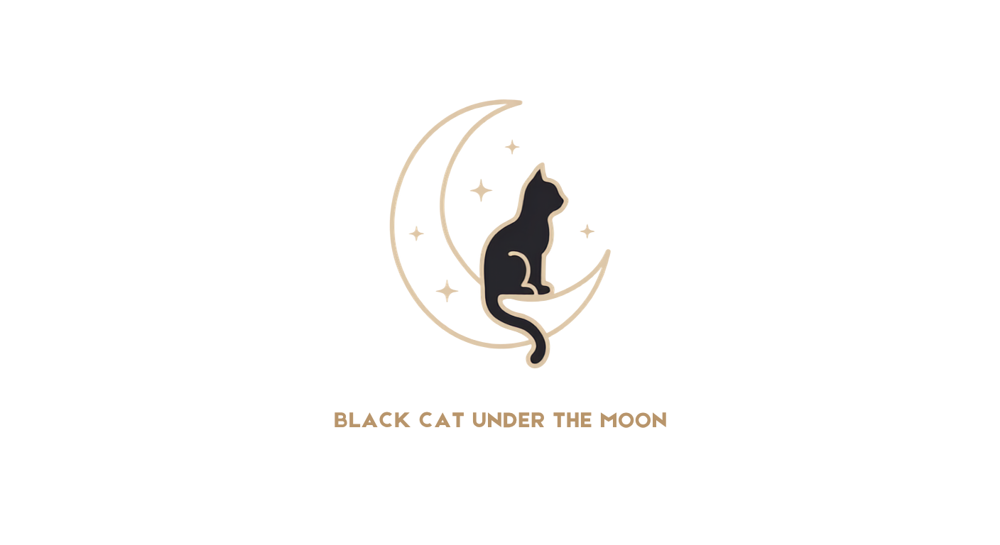

Black Cat Under The Moon
Black Cat Under The Moon 是一個結合心理測驗、靈魂共鳴分析與社群傾訴的線上空間。我們相信，認識自己是一段值得溫柔對待的旅程——在月色之下，慢慢找到屬於你的節奏。
本平台專為香港女同志社群而設，用熟悉的語言與生活場景設計問卷與互動，讓你在安全、被理解的環境裡探索自我、連結同路人。
無論你正在認識自己的取向、尋找合拍的人，或只是想找一個可以說心事的地方——這裡都歡迎你。
透過 Mirror Mode 心理測驗，探索你的性格鏡像，歸屬於四大貓家族之一（獨處、暖陽、秘境、守護），並獲得專屬的 Mirror Card。
測驗不是為你貼標籤，而是幫你看見自己獨特的愛情與相處方式。
🔮 開始 Mirror Mode 測驗 ▸ 🐾 了解四大貓家族 ▸Echo Mode 心靈契合度問卷涵蓋價值觀、生活節奏、溝通方式等多個維度。系統會為你找出最合拍的靈魂同頻者候選，連線成功後透過 Inbox 與電郵通知你。
💫 開始 Echo Mode 連線 ▸月光聚會是一個以香港時間顯示嘅活動月曆，集合社群裡真人見面同線上嘅聚會。你可以按日子瀏覽、申請加入，主辦人審批後就可以一齊參與。
點樣參加：
點樣發起：
安全與私隱：
Moonlight Passport 是為想更深入探索自己、主動連結同頻的她而設的會員方案。升級後可解鎖更多社群與個人化功能，讓你在月色下走得更遠。
交換相前需先上傳你的交換用相片；對方同意並回傳後，雙方才可查看清晰版本。相片僅用於交換功能，不會公開顯示在 Mirror Card 上。
🌙 了解 Moonlight Passport 方案與升級 ▸本平台的心理測驗與共鳴分析功能屬自我探索與娛樂用途，並非臨床心理評估、醫療診斷或專業諮詢服務。若你正面對情緒困擾或需要專業支援，請尋求合資格的心理健康服務。